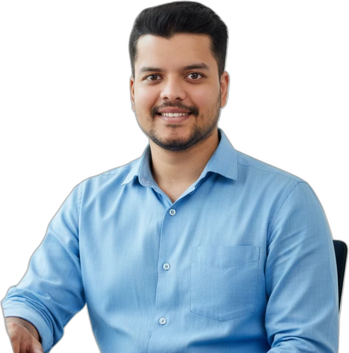

Available immediately · Open to relocation worldwide
Civil and structural engineer, moving from teaching to site work
RCC site supervision · Revit · STAAD.Pro · ETABS
I taught structural design and supervised student research for eight years, then supervised RCC work on two building projects in Pune worth ₹5 Cr+. In 2026 I finished an MSc in Civil Construction and Real Estate Management at Riga Technical University, with a Distinction. I need a work visa for roles outside India.

Areas of work
About
Background and what I am looking for.
I am a civil and structural engineer. For eight years I taught structural design and supervised student research at engineering colleges in Pune. In 2024 and 2025 I worked on site for Shereasava Enterprises, supervising RCC work on a G+1 bungalow and an 8-storey apartment building.
I use Revit, STAAD.Pro and ETABS, and my research has been mostly on concrete quality and non-destructive testing. In 2026 I finished an MSc in Civil Construction and Real Estate Management at Riga Technical University, with a Distinction.
I want to work on site full time. I am available immediately and open to relocation worldwide. I will need a work visa for roles outside India.
Experience
Site and industry work first, then teaching and research.
Site and industry
- 09/2024 – 01/2025
Pune, IndiaAssistant Engineer
Shereasava Enterprises
- Worked on two projects worth ₹5 Cr+ in total (about €550,000): a G+1 residential bungalow and an 8-storey apartment building.
- Bungalow: joined at foundation laying and followed the work through to window and door installation.
- Apartment building: the firm was the RCC contractor, and I managed the RCC work on three of the eight storeys.
- Used Revit for structural modelling and coordination, and did Revit design work for residential bungalows.
- Checked work against the drawings, safety rules and programme, coordinated subcontractors and resolved technical issues on site.
- Carried out site inspections and progress reports. Look-ahead planning contributed to a 20% reduction in project delays.
- 04/2025 – 06/2025
Riga, LatviaIntern, Market and Development Analysis
SIA Dream Property Management
- Analysed local property market activity and development trends to support strategic planning.
- Contributed to service and strategy development for real estate and property management projects.
- 08/2016 – 01/2017
Pune, IndiaIntern
Tejas Buildcon Builders and Developers
- Coordinated subcontractors and site resources, reducing material waste by 12%.
- Helped develop detailed project execution plans in consultation with clients.
Teaching and research
- 08/2018 – 08/2024
Pune, IndiaAssistant Professor
Indira College of Engineering and Management
- Taught structural analysis, structural design and steel design, from first-year subjects to final-year courses, and guided student projects in ETABS, STAAD.Pro and Revit.
- Supervised industry-sponsored and in-house student projects. Other institutes invited me as an external examiner.
- Research Committee member and Laboratory Consultancy Coordinator. Prepared research proposals for government and international agencies, including iHub-AWaDH (IIT Ropar) and CWPRS.
- Organised IPR seminars and workshops, and contributed to 6 patent and design filings and 1 copyright between 2022 and 2024.
- NAAC criteria in-charge, part of the institute’s restructuring under AICTE norms, ERP coordinator, and in charge of the CAD and Mechanics laboratories.
- 01/2017 – 08/2018
Pune, IndiaLecturer
Suman Ramesh Tulsiani Technical Campus
- Guided undergraduate students through structural design projects and seminars, and coordinated university examinations.
- 08/2015 – 04/2016
Pune, IndiaVisiting Lecturer
Bharati Vidyapeeth’s College of Engineering
- Delivered civil engineering coursework and organised the annual technical festival “INSA – 2k16”.
Education
Degrees and final-year theses.
- 01/2025 – 06/2026
Riga, LatviaMaster of Science, Civil Construction and Real Estate Management
Riga Technical University
GPA 9.26/10, Distinction
Master’s thesis, 2026Impact of Climate Change on Civil Infrastructure
Scientific advisor: Asst. Prof. Mg. Leo Jansons. Reviews climate hazards and adaptation for infrastructure, with three computational case studies: urban drainage flood risk in Riga, thermal expansion of bridge joints, and coastal erosion along the Gulf of Riga.
- 08/2015 – 05/2017
Pune, IndiaMaster of Engineering, Structural Engineering
JSPM’s Rajarshi Shahu College of Engineering
CGPA 7.47/10, First Class
Dissertation, 2016–17Influence of Replacement of Recycled Aggregate on Strength of Concrete
Guide: Prof. Sudhir L. Bhilare. Co-guide: Prof. G. R. Patil. Tested concrete made with recycled aggregates in place of natural aggregates.
- 08/2011 – 05/2015
Pune, IndiaBachelor of Engineering, Civil Engineering
Genba Sopanrao Moze College of Engineering, Balewadi
63.67%, First Class
Project report, 2014–15SONREB – Combined Non Destructive Testing
Team project guided by Asst. Prof. Shweta Patil. Compared combined non-destructive tests with cube compressive strength. Won 2nd prize at the state-level INNOVATION–2015 competition.
Projects
Three projects in detail, then the smaller ones.
RCC works on an 8-storey apartment building
- Situation
- Shereasava Enterprises was the RCC contractor for an 8-storey apartment building in Pune. It was one of two sites, with a G+1 bungalow, worth ₹5 Cr+ together.
- Task
- Manage the RCC work on three of the eight storeys and keep it in line with the drawings, safety rules and programme.
- Action
- Inspected the work, coordinated subcontractors and materials, resolved technical issues, and planned ahead with look-ahead schedules and progress reports.
- Result
- Contributed to a 20% reduction in project delays.
45-storey RCC frame with outriggers
- Situation
- Tall reinforced concrete frames deflect a lot sideways, and the position of outriggers is a key design choice.
- Task
- Show how outrigger configurations reduce deflection compared with conventional RC systems.
- Action
- Compared several outrigger placements, using concrete and steel-braced trusses, against frames with and without shear walls.
- Result
- Outriggers at every third floor met the displacement and drift limits on both the 6 m and 8 m grids, while the conventional frame exceeded the wind limits. Published in IJARSCT (July 2024) and registered as copyright L-150695/2024.
Non-destructive testing of concrete (SONREB)
- Situation
- Concrete strength in existing structures has to be checked without damaging them. The work was sponsored by Constrologix Engineering & Research Services.
- Task
- Test whether combined non-destructive methods agree with cube compressive strength.
- Action
- In 2014–15, compared combined NDT readings on laboratory specimens and existing buildings with cube tests. In 2018–19, repeated the comparison on columns at four existing buildings.
- Result
- 2nd prize at the state-level INNOVATION–2015 competition. Presented at ICBCCE-2015 and published as papers in 2015 and 2019.
Other projects
- Concrete from industrial waste, 2022–23Cement fully replaced by GGBS and natural aggregate partly replaced by crushed granite stone; mechanical properties tested.
- Inverted Chamfer Cap, 2021–22External attachment for retaining walls that diverts waves back to sea. Patent application published in 2022.
- 100% GGBS concrete with NaOH, 2019–20M30-grade concrete with cement fully replaced by GGBS, activated with NaOH.
Research & Recognition
Publications, books, patent filings, one award and two conference talks.
Books and chapters
- Co-author, Advance Concrete TechnologyRG International Publication, 2024
- Chapter 28, “Renewable Energy and the Path to a Sustainable Future”Transcending Boundaries: New Dimension in Multidisciplinary Research, pp. 270–280, 2024
Publications and methods
- “Analysis of RCC Framed 45 Storey Building Using Different Combination of Outriggers”Mulik, Mali, Patankar, Gavit, Ghotkule · IJARSCT 4(1), July 2024Method: ETABS models of a G+45 RC frame on 6 m and 8 m grids, with a conventional frame, a shear wall and concrete or steel outriggers at every 3rd, 4th or 5th floor, checked for displacement and storey drift against IS 1893 and IS 875 limits, plus a cost comparison.
- “Prediction of Structural Health of Civil Engineering Infrastructure Using AI”Sharma, Mulik et al. · 6th International Conference on Contemporary Computing and Informatics (IC3I), 2023Method: Review of AI methods for structural health monitoring, with a software-agent framework that combines data plausibility checks, regression, fuzzy logic and trend tests (Mann-Kendall), illustrated on a bridge.
- “Concrete Quality Assessment by using Non-Destructive Test”Mulik, Deo, Dhumal, Ghaywat · IRJET 6(3), 2019Method: Rebound hammer test on concrete: principle, procedure, calibration on the test anvil and limitations, with readings read against correlation curves.
- “Comparison of Compressive Strength of Concrete Assessed from Existing Building”Wairagade, Mulik, Dhumal, Ghaywat · IRJET 6(3), 2019Method: N-type rebound hammer readings on 77 columns of an existing building, with 10 columns compared against cube crushing tests (IS 13311, IS 516); correlation R² = 0.76.
- “Use of Recycled Concrete Aggregate and Its Influence on Strengths of Concrete”Mulik, Bhilare, Patil · Int. J. of Trend in Research and Development 4(4), 2017Method: M30 mix with recycled coarse aggregate from four demolished buildings (7, 12, 21 and 61 years old) replacing natural aggregate from 10% to 100%; 246 cubes and 246 beams tested at 7 and 28 days. Strength was acceptable up to about 30% replacement.
- “The Use of Combined Non-Destructive Testing in the Concrete Strength Assessment from Laboratory Specimens and Existing Buildings”Mulik et al. · Int. J. of Current Engineering and Scientific Research 2(5), 2015Method: SonReb: rebound hammer plus ultrasonic pulse velocity, calibrated on 60 cubes (M15 to M40) with the law fck = a·Vb·Rc. Correlation was 0.867 combined, against 0.798 for rebound alone and 0.672 for pulse velocity alone.
Patent applications, design filings and copyright (India)
- Analysis of RCC Framed 45-Storey Building using different Combinations of OutriggersCopyright L-150695/2024
- IoT Based Wastewater Management SystemDesign filing 416988-001, 2024
- AI based smart goggles for construction laboursDesign filing 419404-001, 2024
- Inverted Chamfer Cap (ICC): Retrofit for coastal retaining wall structuresPatent application 202221033732A, published 2022
- Prediction of Severe Environmental Impacts Related to Construction Process of Residential BuildingPatent application 202221017056A, published 2022
- Economical Filler Proportioning Partial Cement Replacement to Increase Mechanical Properties of ConcretePatent application 202221052547A, published 2022
- Sustainable Replacement of Cement and Sand with Commercial Waste to alter the Mechanical Properties of ConcretePatent application 202221059493A, published 2022
Award and conferences
- Outstanding Faculty in Civil EngineeringThe World Education Congress and Awards, 07/2024
- Speaker, 4th International Conference on Trends & Recent Advances in Civil Engineering, 2022Full replacement of cement with GGBS in addition to NaOH
- Speaker, CIVILPGCON, 2017Influence of replacement of recycled aggregate on strength of concrete
Skills & Training
What I use, and where I have used it.
Software
- RevitStructural modelling and coordination on site at Shereasava Enterprises; BIM projects with students
- STAAD.Pro and ETABSStructural analysis and design; student design projects guided as Assistant Professor
- AutoCAD2D and 3D drafting
- SketchUp3D and architectural modelling
- ANSYSFamiliar from postgraduate studies
- Microsoft Office
Site and quality
- RCC site supervision
- Site inspections and progress reports
- Look-ahead planning
- Subcontractor and resource coordination
- Land surveying
- Concrete quality assessment and NDT
Design codes
- IS codes and EurocodeIS 456 and IS 800 for member design, IS 875 (Part 3) for wind and IS 1893 (Part 1) for seismic loads in the 45-storey outrigger study; IS 516 and IS 13311 in concrete testing; Eurocode provisions for steel and concrete design
Courses and certificates
- Civil Engineering (Applied Construction Project)University of Nottingham, Kuala Lumpur
- Sustainable Construction MaterialsRajasthan Technical University, Kota
- Hydration, Porosity and Strength of Cementitious Material; Development and Application of Special ConcreteIIT Kanpur
- Smart CitiesKumaraguru College of Technology, Coimbatore
- AutoCADCADD Centre Training Services, Aundh
- Faculty Development Programs: Advances in Construction Technologies and Sustainable Materials (Indian Concrete Institute, Pune); Precast Building Technologies in Housing (UltraTech and ICI); Mathematical Modelling (AICTE and ISTE)
Languages
- English IELTS 7
Recommendations
Summarised from letters of recommendation.
Taught first-year courses through to Structural Analysis and Structural Design, and guided student seminars and industry-sponsored projects. Also took on ERP, laboratory and NAAC accreditation duties, and was invited as an external examiner by other institutes.
Prof. Vijay Wairagade
Worked alongside Nikhil on the Research and Development Committee for two years and valued his organisation and attention to detail in running IPR seminars and workshops. Also noted his four patent publications and his proactive pursuit of research grants from government agencies.
Dr. Poorna Shankar
Guided Nikhil’s Master’s project on recycled aggregate concrete, later published in a journal, and called him one of the exceptional students of his career. Highlighted his organisation of a two-day state-level workshop and his initiative in learning STAAD.Pro and ANSYS.
Dr. G. R. Patil
Mentored Nikhil’s final-year SONREB project, which won 2nd prize at INNOVATION–2015, and praised his steady commitment, practical knowledge and communication skills. He was the anchor for the department’s technical and non-technical events.
Mr. Sachin Patil
A fellow Structural Engineering student at Rajarshi Shahu College of Engineering, who describes Nikhil as a positive, supportive teammate who helped friends with the practical side of their projects.
Mr. Ranjit Rangrao Chavan
Contact
For on-site civil and structural roles.
Available immediately for on-site civil and structural roles. Open to relocation worldwide. A work visa is required for roles outside India.
Latvia
Hipokrata iela 3, Riga, Latvia, 1079+371 25 717 951India
Adinath Colony, Rahatani, Pimpri, Pune, India, 411017+91 9225296035